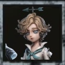
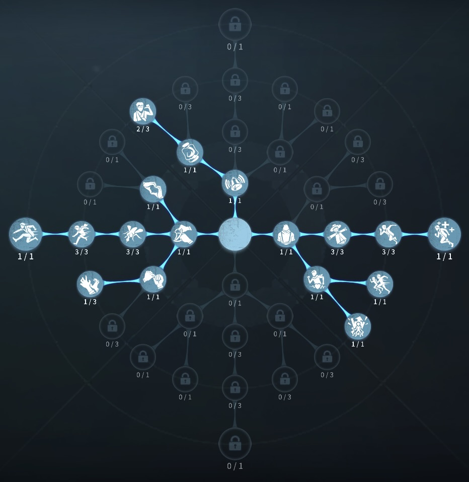
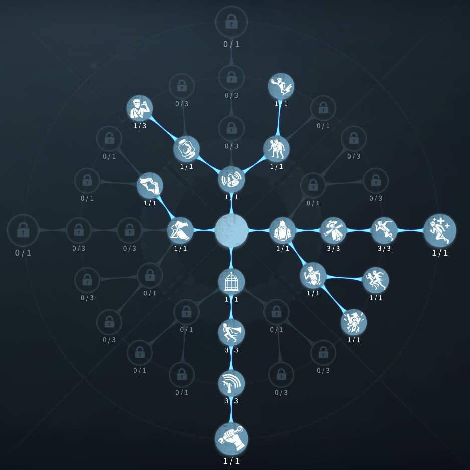

気象学者の評価
治療、チェイス、補佐、満点の能力
外在特質と特徴
特質1:気象実験
強風耐久消費：32%～40%
縦で上下になぞることで強風を使用可能
スキルを発動するとカメラの向いている方向に向かって強風を発生させ、ハンターに接触すると持続的にハンターを押しやる。
強風の幅と耐久消費量は上下の横幅に影響され、速度は上下の縦幅の平均値に影響され、効果時間は上下の角の数に影響する。
層雲
耐久消費：44%～57%
横向き左右になぞると層雲を使用可能
スキルを発動させると層雲によって気象学者を浮かばせ移動することができる。
層雲の浮上高度と耐久消費量は左右の縦幅に影響され、持続時間は左右の角の数に影響され、飛行速度は左右の横幅の平均値に影響する。
暖雨
耐久消費：40%
円形になぞると暖雨を使用可能。
スキルを発動すると32メートル以内の指定エリアに暖雨を降らせることができる。範囲内にいるサバイバー1名が暖雨の影響を受け、1秒毎に平静値を獲得する。平静値が100に達すると、ダメージを1回復する。暖雨の影響を離れてから3秒経つと平静値は毎秒15の速度で低下する。 平静値の増加速度は図形の円の数に影響され、雨雲の飛行速度は円の平均面積に影響される。 気象学者は1秒毎に得られる平静値が6になる。 解読中は平静値を得ることが出来ない。
特質2:可逆反応
・なぞって得たアイテムは30秒持続し、制限時間を超過すると解除される。自ら解除することもできる。特質3:環境感知
・36メートル以内に存在する負傷状態の仲間を強調表示する。生存しているサバイバーが気象学者一人だけになった時、脱出口の位置を持続的に表示する。特徴
3つの作るアイテムが強力すぎる。チェイスポジションによって使うアイテムが変わる。
遠方治療ができるサバイバー
基本的な立ち回り方
1. 追われた時
チェイスポジションによって層雲を使うか強風をつかうかをわける。
強風は相手がスキルを使った後に使うのが強力
層雲は乗り越えられない壁、塀などに使うと強力
2. 追われない時
解読に専念する！
治療が必要な際は、暖雨を使って治療しよう。
おすすめの内在人格
膝蓋腱反射型人格
この内在人格は、観客効果で解読速度を上げ、癒合で治療を強化、もがきで風船もがきを増やした人格

危機一髪型人格
この内在人格は、共生効果で救助のよりを早めて、観客効果で解読速度を早めた人格


みんなのコメント